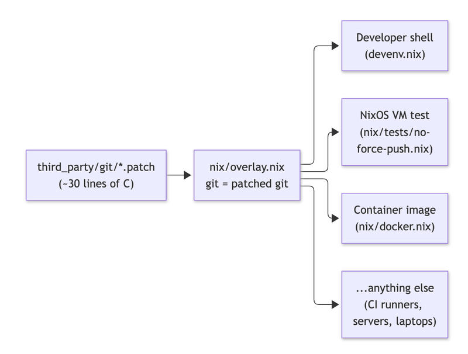

Feature 07 · VERBATIM · 2026 10
the world hasn’t figured out yet that you can literally just fix everything with a Nix overlay
There are many things that are uncertain in our industry right now, but one thing I am certain about, and have been for almost 13 years, is that Nix is a terrible programming language.
I remember when I first learned it, it felt like pushing shit uphill. The learning cliff is ferocious, and it took me a couple of years to master it because there was no AI back then, but I stuck with it. There’s some magic here, and in this post, I’m going to show you why Nix should be your primary choice for all your software projects.
First, I’m going to open with this: many pieces of technology are in our heads as really hard to learn, complex, and maybe that’s stopped you from picking one up, but I want to encourage you to falsify those thoughts any time you start thinking along those lines. Now that we have AI, things that used to be advanced power tools, hard to use or designed for masters, are now accessible to everyone. You can just prompt for outcomes.
first, some introductory knowledge
The term Nix is overloaded. It means many different things; when someone says they use Nix, the first thing you should do is ask, “How do you use Nix?” and “What is Nix to you?” because there are many ways to use it; it’s not just a package manager or a build system; it can also be an operating system.
Explanation of the Nix ecosystem’s abstraction layers
an explanation of the Nix ecosystem abstraction layers.
In this post, I’ll focus on Nix’s versatility and utility, and why it’s so powerful in the age of AI. There’s a reason the labs are using this to build the models you are consuming...
agent and developer experience
By using tools like https://devenv.sh/, you can define a single source of truth for your compilation toolchain and required third-party dependencies. Humans can use this single source of truth in CI/CD and in ephemeral sandbox development environments used by agents.
# visit https://devenv.sh/getting-started/ for installation instructions
$ vi devenv.nix
# devenv.sh/packages/
packages = [ pkgs.prek ];
# devenv.sh/languages/
languages = {
rust.enable = true;
};
# devenv.sh/services/
services = {
postgres.enable = true;
};
# Configure and install the Rust formatting Git hook.
git-hooks = {
hooks = {
rustfmt.enable = true;
};
};
$ devenv up
this one stanza provides rust, postgres and prek (for agent backpressure) and it just works across all operating systems
I keep coming across clients with drift between how a local laptop is configured and how their CI/CD is configured. And now we’ve got ephemeral sandbox environments; they’re heading down a path of triplicating that drift. This is utter madness. It is not needed. Stop it.
You might be thinking, “Well, there’s mise for this.” Trust me, mise isn’t good enough. Mise is a low-power, low-IQ tool. It does one thing, and it does it well, but it doesn’t enable your agents to truly fly.
not just a package manager
nix is super composable. That same expression that defines your human developer environment setup, your CI/CD setup, and your ephemeral sandbox setup can also be reused to build performant Docker images.
Optimising Docker Layers for Better Caching with Nix - Graham Christensen
pkgs.dockerTools.buildLayeredImage {
name = "git";
tag = "latest";
contents = [
(pkgs.buildEnv {
name = "image-root";
paths = [ pkgs.git pkgs.cacert ];
pathsToLink = [ "/bin" "/etc" ];
})
];
config.Env = [
"PATH=/bin"
"SSL_CERT_FILE=/etc/ssl/certs/ca-bundle.crt"
];
config.Cmd = [ "/bin/git" "--version" ];
};
This expression here creates your docker image with git in it. But there’s no reason why this docker image can’t be the binaries used to run your application in production. 🫡
But perhaps... the real reason I love Nix is its power to compose an operating system. With a standard operating system such as Debian or Ubuntu, what happens if an agent is given sudo access to do things on your machine?
You’d be pretty scared, right?
What if I told you that when I’m doing agentic development, I develop on NixOS and I explicitly prompt my agents to use sudo as part of my loop engineering, and it is safe because NixOS is designed to make it nearly impossible to break a machine, and if it does, you can instantly roll back that change.
Different Rollback Methods in NixOS
why the operating system matters
When others do loop engineering with their agents, they’re likely running loops with building the application, perhaps Postgres, but rarely anything more. The primary difference between how others do loop engineering and how I do is that, when I run loops, I put the entire system under test, and the entire System Under Test IS the operating system.
You might think, “Whoa, what the —“ Like, how the hell do you do this?
ah! My sweet summer child. It is really simple.
NixOS has a testing framework (runNixOSTest), built in, and for anything you could ever want to assert about how an operating system is configured, or even across many machines, you can spin up a cluster. You can use a number of machines in a test, assert the network rules between them are correct, and that the right IP tables are forwarded or dropped. You do machines of machines, and you actually test the interoperability of that environment against your application.
nixpkgs/nixos/doc/manual/development/writing-nixos-tests.section.md at master · NixOS/nixpkgs
Nix Packages collection & NixOS. Contribute to NixOS/nixpkgs development by creating an account on GitHub.
Here’s an example of what this looks like when you’ve defined an operating system in NixOS and want to assert the network is configured correctly with your firewall zones, and that network activity works for your application before you deploy it.
# NixOS VM test: HAProxy in front of a Python hello-world server.
#
# Topology (two QEMU nodes, separate L2 networks):
#
# vlan 1 192.168.1.0/24 frontend
# haproxy eth1 192.168.1.1/24 HAProxy binds :80 here only
#
# vlan 2 192.168.2.0/24 backend
# haproxy eth2 192.168.2.1/24 allowed source
# eth2 192.168.2.50/24 extra address, must be rejected
# web eth2 192.168.2.2/24 Python hello-world on :8080
#
# NixOS test IP scheme is 192.168.<vlan>.<nodeNumber>. nodeNumber comes from
# the sorted node name, so haproxy = 1 and web = 2.
#
# web firewall:
# - inbound: accept TCP 8080 only from 192.168.2.1, drop everything else
# - outbound: no new connections; established replies to HAProxy still pass
#
# Run:
# nix build .#checks.x86_64-linux.haproxy-hello
# nix run .#driverInteractive # drop into the test driver
{ lib, ... }:
let
frontendVlan = 1;
backendVlan = 2;
# Sorted node names: haproxy, web.
haproxyNode = 1;
webNode = 2;
haproxyFrontendIp = "192.168.${toString frontendVlan}.${toString haproxyNode}";
haproxyBackendIp = "192.168.${toString backendVlan}.${toString haproxyNode}";
# Same backend VLAN, but not the address the firewall allows.
haproxyUntrustedIp = "192.168.${toString backendVlan}.50";
webIp = "192.168.${toString backendVlan}.${toString webNode}";
frontendPort = 80;
webPort = 8080;
helloBody = "hello from python";
in
{
name = "haproxy-hello";
nodes = {
haproxy = { pkgs, ... }: {
virtualisation.vlans = [ frontendVlan backendVlan ];
virtualisation.memorySize = 512;
environment.systemPackages = [ pkgs.curl ];
# Harness already assigns 192.168.2.1/24. This alias is the negative
# control: same L2 network, source the backend must refuse.
networking.interfaces.eth${toString backendVlan}.ipv4.addresses = [
{
address = haproxyUntrustedIp;
prefixLength = 24;
}
];
networking.firewall = {
enable = true;
# Frontend lives only on vlan 1. Do not publish :80 on the backend net.
interfaces.eth${toString frontendVlan}.allowedTCPPorts = [ frontendPort ];
};
# The haproxy module already opens a `global` section and installs the
# stats socket, so this value must start at the next section.
services.haproxy = {
enable = true;
config = ''
defaults
mode http
timeout connect 5s
timeout client 10s
timeout server 10s
timeout check 5s
frontend fe_http
bind ${haproxyFrontendIp}:${toString frontendPort}
default_backend be_hello
backend be_hello
option httpchk GET /
http-check expect status 200
server hello ${webIp}:${toString webPort} check
'';
};
};
web = { pkgs, ... }: {
virtualisation.vlans = [ backendVlan ];
virtualisation.memorySize = 512;
environment.systemPackages = [ pkgs.curl ];
networking.firewall = {
enable = true;
# extraCommands is the iptables backend. Pin it so the rules below apply.
backend = "iptables";
allowPing = false;
logRefusedPackets = true;
# Nothing open on every source. The only accept is extraCommands.
allowedTCPPorts = [ ];
extraCommands = ''
iptables -A nixos-fw -p tcp -s ${haproxyBackendIp} --dport ${toString webPort} -j nixos-fw-accept
# No new outbound. Established replies (the HAProxy request path) still pass.
iptables -A OUTPUT -o lo -j ACCEPT
iptables -A OUTPUT -m conntrack --ctstate ESTABLISHED,RELATED -j ACCEPT
iptables -A OUTPUT -j REJECT --reject-with icmp-host-prohibited
ip6tables -A OUTPUT -o lo -j ACCEPT
ip6tables -A OUTPUT -m conntrack --ctstate ESTABLISHED,RELATED -j ACCEPT
ip6tables -A OUTPUT -j REJECT --reject-with icmp6-adm-prohibited
'';
extraStopCommands = ''
iptables -D nixos-fw -p tcp -s ${haproxyBackendIp} --dport ${toString webPort} -j nixos-fw-accept || true
iptables -D OUTPUT -o lo -j ACCEPT || true
iptables -D OUTPUT -m conntrack --ctstate ESTABLISHED,RELATED -j ACCEPT || true
iptables -D OUTPUT -j REJECT --reject-with icmp-host-prohibited || true
ip6tables -D OUTPUT -o lo -j ACCEPT || true
ip6tables -D OUTPUT -m conntrack --ctstate ESTABLISHED,RELATED -j ACCEPT || true
ip6tables -D OUTPUT -j REJECT --reject-with icmp6-adm-prohibited || true
'';
};
systemd.services.hello-world = {
description = "Python hello-world HTTP server";
wantedBy = [ "multi-user.target" ];
after = [ "network.target" ];
serviceConfig = {
ExecStart = "${pkgs.python3}/bin/python3 ${pkgs.writeText "hello.py" ''
from http.server import BaseHTTPRequestHandler, ThreadingHTTPServer
BODY = b"${helloBody}\n"
class Handler(BaseHTTPRequestHandler):
def do_GET(self):
self.send_response(200)
self.send_header("Content-Type", "text/plain")
self.send_header("Content-Length", str(len(BODY)))
self.end_headers()
self.wfile.write(BODY)
def log_message(self, fmt, *args):
return
if __name__ == "__main__":
ThreadingHTTPServer(("${webIp}", ${toString webPort}), Handler).serve_forever()
''}";
DynamicUser = true;
NoNewPrivileges = true;
ProtectSystem = "strict";
ProtectHome = true;
Restart = "on-failure";
};
};
};
};
testScript = ''
start_all()
haproxy.wait_for_unit("haproxy.service")
web.wait_for_unit("hello-world.service")
web.wait_for_unit("firewall.service")
haproxy.succeed("ip -4 addr show dev eth${toString frontendVlan} | grep -q '${haproxyFrontendIp}/24'")
haproxy.succeed("ip -4 addr show dev eth${toString backendVlan} | grep -q '${haproxyBackendIp}/24'")
haproxy.succeed("ip -4 addr show dev eth${toString backendVlan} | grep -q '${haproxyUntrustedIp}/24'")
web.succeed("ip -4 addr show dev eth${toString backendVlan} | grep -q '${webIp}/24'")
with subtest("backend accepts only haproxy on the hello port"):
haproxy.wait_until_succeeds(
"curl -fsS --interface ${haproxyBackendIp} http://${webIp}:${toString webPort}/ | grep -F '${helloBody}'"
)
haproxy.fail(
"curl -fsS --max-time 5 --interface ${haproxyUntrustedIp} http://${webIp}:${toString webPort}/"
)
haproxy.fail(
"curl -fsS --max-time 5 --interface ${haproxyBackendIp} http://${webIp}:9/"
)
with subtest("haproxy on the frontend vlan proxies to python"):
haproxy.wait_until_succeeds(
"curl -fsS http://${haproxyFrontendIp}/ | grep -F '${helloBody}'"
)
with subtest("python host cannot open new outbound connections"):
web.fail("ping -c 1 -W 3 ${haproxyBackendIp}")
web.fail("curl -fsS --max-time 5 http://${haproxyBackendIp}:${toString frontendPort}/")
# Return path still works: the proxy subtest above already required it.
web.succeed("iptables -S OUTPUT | grep -q 'REJECT'")
web.succeed(
"iptables -S nixos-fw | grep -q -- '-s ${haproxyBackendIp}/32 -p tcp -m tcp --dport ${toString webPort} -j nixos-fw-accept'"
)
'';
}
There’s an old saying that bare metal was complicated and it was a mess. This is no longer true now that we have Nix. Honestly, one of the most galaxy-brain moves you can make these days is to ditch hyperscalers like AWS and acquire bare metal to build that fleet with NixOS, because business margins are going to get compressed by AI.
Sure, you’ll need to find an older, more experienced sysadmin, but once you get the right patterns in place, one or two of those people can operate with leverage equivalent to a team of 50 “cloud certified” monkeys. I shit you not, no exaggeration, it is insane what you can do with this composability.
single sources of truth
Nix, when architected correctly, enables you to define a single source of truth for any piece of software in your stack, including dependencies.
Let’s say there is a security vulnerability, and there is, like, a critical OpenSSL vulnerability. How long would it take you to identify all the different OpenSSL versions deployed within your organization? How long would it take to patch, including all dependencies of third-party software that depends on that particular version within your organization, including software dependencies linked against it?
With nix, this can be achieved through a couple of lines
{ pkgs, ... }: {
nixpkgs.overlays = [
(final: prev: {
openssl = prev.openssl.overrideAttrs (old: {
version = "3.0.7";
src = prev.fetchurl {
url = "https://www.openssl.org/source/openssl-3.0.7.tar.gz";
hash = "sha256-...";
};
}
what you just saw was an overlay

An overlay is the key primitive which makes Nix absolutely amazing. I want you to think about how you use open source software. What happens when you find a bug? Do you go to GitHub and ask someone to take your pull request? Or maybe you fork it. But when you fork it, you have to figure out how you’ll build it and where you’ll host the resulting artifact (ugh, Artifactory) so it can be consumed.
I’ll show you a concrete example. It’s here on GitHub. It shows a pattern I’ve used for years: in my agent sandbox environments, I customize the Git binary and remove the agent’s ability to force-push by removing that functionality from Git itself. It also includes all the patterns shared in this blog post, from building a Docker image to building a NixOS virtual machine and testing that git push --force has been removed.
Patch git once with a Nix overlay; use it in devenv, a NixOS VM test and a Docker image - ghuntley/nix-demo
What happens if what you need to customize isn’t just a standard command-line tool? What happens if it’s a low-level thing, like OpenSSL, that many things depend on, and you need to rebuild the world? Think about that graph. Think about the pain.
With Nix, every change is just an overlay; all software becomes infinitely customizable at all levels, all the way down to the Linux kernel itself, and you can patch anything by asking an agent to customize it. The only restriction on what you can do is your imagination and ambition. These LLMs know Nix very well because the labs themselves are using Nix on their journey toward reaching RSI...
ps.
You might be wondering about Bazel and Buck2. I also use these alongside Nix, but the best bang for the buck right now is just to use Nix. There are a lot of problems with Nix, for example, how the derivation store works and what that means for incremental caching, something Bazel and Buck2 excel at, but I’m not going to complicate things right now by going into these details. Move past this and just start using Nix to customize all your software.
pps.
If you are building security-critical systems, burn tokens to find every security vulnerability in third-party dependencies your software stack relies on using a cyber model, and fix them with overlays. 🧠🧠🧠
pps. socials
🗞️ the world hasn’t figured out yet that you can literally just fix everything with a Nix overlay
In this blog post, I go into how I use Nix, why you should use it, and in the tweet below is a runnable demo showing all of the concepts in this post https://t.co/rZ3sqCb5gt pic.twitter.com/QeyAHWTxnR
— geoff (@GeoffreyHuntley) October 7, 2026